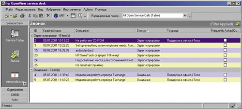
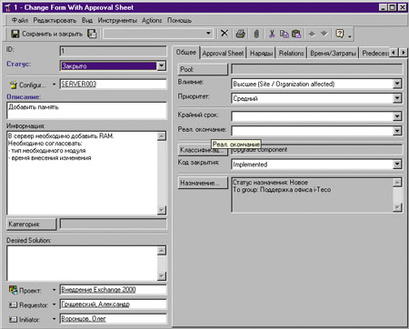
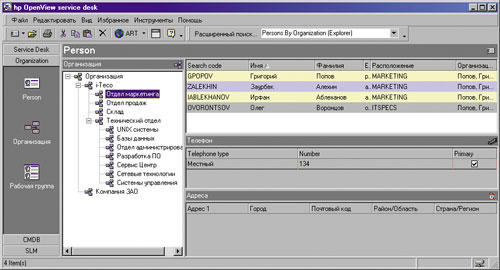

Олег Воронцов,
менеджер по продуктам IT-управления компании i-Teco
oleg@I-teco.ru
Вам знакома ситуация, когда по любому вопросу, хоть отчасти связанному с информационной системой, пользователи обращаются именно к вам, даже если есть человек, отвечающий за такие неисправности? Берусь угадать, что именно вы слышите от пользователей чаще всего: "Почему у меня ничего не работает?" (или: "У меня не работает компьютер!!"). А не бывает так, что, когда вы занимаетесь восстановлением неисправного сервера и дорога каждая минута, вам непрерывно названивают все по очереди пользователи и сообщают: "А вы знаете, что у нас сервер не работает?" И на сколько человек у вас обычно хватает вежливости?
Все это достаточно типичные проблемы любого ИТ-подразделения, не использующего службу диспетчеризации обращений пользователей. Если в небольшой компании, где достаточно одного-двух администраторов, ответственных "за все", такая ситуация практически неизбежна, то в компаниях с несколькими сотнями пользователей и ИТ-персоналом хотя бы в 5-10 человек такая служба целесообразна и должна непременно быть.
Подобная структура может именоваться "горячей линией" (Customer Hot Line), "центром приема сообщений" (Call Center), "центром технической поддержки" (Technical Support Center), "диспетчерской помощью клиентам" (Help Desk) или как-то еще. Как правило, различие в наименовании скрывает в себе и некоторое различие в функциональности. В основном службы такого рода можно разделить на три категории.
Центр приема сообщений (Call Center). Такой тип службы преимущественно ориентирован на организацию приема большого числа телефонных сообщений. Поступившие звонки регистрируются в соответствии с установленными правилами, а при необходимости и переадресуются тому или иному специалисту.
Диспетчерская помощи клиентам (Help Desk). В дополнение к предыдущему пункту осуществляется контроль за устранением возникшей проблемы. Основная цель - разрешение инцидентов в максимально короткие сроки и сохранение всей информации об инциденте. По возможности проблему должен устранить непосредственно оператор, консультируя клиента.
Сервис-диспетчерская (Service Desk). В этом случае к уже перечисленным функциям добавляется учет влияния предоставляемых услуг на бизнес в целом, учет не только инцидентов, но и любых иных запросов и пожеланий клиентов, контроль соблюдения контрактов, мониторинг текущего состояния служб и многие другие процессы, типичные для ИТ-подразделений: рутинные повседневные мероприятия, планирование работы персонала, планирование развития ИС, учет жизненного цикла компьютерной и оргтехники, программного обеспечения, документации.
Все эти процессы описаны в ITIL (Information Technology Infrastructure Library) - библиотеке передового опыта в области управления информационными технологиями. ITIL - это тщательное описание модели жизненного цикла ИТ - организации, примеров реализации и комментариев специалистов. ITIL принят как стандарт для построения ИТ-служб во многих странах мира. Подход ITIL заключается в разделении жизненного цикла управления ИТ на несколько взаимосвязанных процессов. Сюда входят такие области, как ведение БД конфигурации ИС (Configuration management), отслеживание, подтверждение и внесение изменений в конфигурацию ИС (Change Management), диспетчеризация обращений пользователей (Help Desk), диспетчеризация и устранение неисправностей ИС (Incident Management), выявление, определение приоритетов и устранение проблем, которые становятся причинами повторяющихся инцидентов (Problem Management), управление уровнем сервиса (Service Level Management) и множество других*. Все это вместе можно назвать службой Service Desk.
*Подробную информацию об ITIL, перечисленных здесь процессах и практике их применения в России можно найти на российском сайте Международного форума по проблемам ITSM: http://www.itsmf.ru.
Организационные и методические аспекты организации такой службы останутся за рамками данной статьи. Мы же остановимся на техническом оснащении службы.
Как работает служба Service Desk
Многие службы поддержки начинались с обычных бумажных журналов учета, в которые вносились индивидуализированные записи по каждому случаю, с отметкой о деталях и решениях. Однако таким образом можно только зафиксировать инцидент и факт его устранения. Большие возможности предоставляют компьютеризованные решения, которые, привнося точность и аккуратность, одновременно дают возможность доступа и быстрого поиска в записях о ранее возникавших ситуациях, известных ошибках, истории запросов клиента и иной управленческой информации. Наибольшую пользу приносит именно возможность легко получить ранее практически недоступную информацию.
Основные преимущества компьютеризованной службы Service Desk таковы:
- доступность информации об инциденте всему персоналу службы поддержки;
- сокращение периода обслуживания инцидента;
- усовершенствованные процедуры отслеживания, эскалации и отработки инцидентов;
- доступность в оперативном режиме более качественной информации (в том числе данных об известных ошибках, решениях и истории запросов), а также внешних источников данных;
- большая доступность и точность управленческой информации;
- устранение потерь, "забывчивости" и дублирования информации;
- более качественное использование квалифицированного персонала;
- облегчение решения совокупных задач и вычислений.
Современные системы Service Desk способны управлять, контролировать и отслеживать запросы на обслуживание, соблюдение условий контракта, людские ресурсы и последовательности работ. Эти системы интегрируются с другими важными компонентами совокупной системы управления ИТ-ресурсами (в том числе с рекомендуемыми ITIL - "Управление изменениями", "Конфигурирование и учет активов", "Управление ценой", "Непрерывность бизнеса", "Планирование возможностей", "Управление сетями" и т. д.).
Существует ряд организаций, занимающихся сертификацией программных продуктов, в которых реализована функциональность Service Desk; одна из них - Pink Elephant. С результатами сертификации продуктов можно ознакомиться на сайте http://www.pinkelephant.com/us/consultingservices/toolsets.htm.
Об одном из наиболее интересных продуктов, предоставляющих функции Service Desk, хотелось бы рассказать подробнее - это HP OpenView Service Desk версии 4.0.
Что такое HP OpenView Service Desk
Продукт позаимствовал название у целой области средств управления ИТ. Во избежание смешения понятий будем в дальнейшем называть его OV Service Desk. Но действительно ли он так всесторонен и оправдывает ли свое название? Давайте разберемся.
OpenView Service Desk - программный продукт для управления услугами в области информационных технологий, позволяющий ИТ-подразделениям реализовать службу поддержки пользователей (help desk), а также увязать процессы управления конфигурацией, обработки инцидентов и проблем, управления изменениями в единый поток операций. Благодаря такой интеграции персонал сможет контролировать все аспекты работы ИТ-службы, реагировать на проблемы и разрешать их до того, как они отразятся на предоставляемых услугах и бизнес-процессах.
HP OpenView Service Desk построен на базе лучших методик ведения бизнеса, разработанных на основе более чем 10-летнего опыта работы компании HP в области поддержки и управления услугами, а также в соответствии с требованиями ITIL. OV Service Desk прошел сертификацию в компании Pink Elephant, получив оценку Enhanced PinkVerify, подтверждающую высокую степень соответствия продукта методологии, отраженной в ITIL.
Service Desk позволяет автоматизировать управление следующими аспектами деятельности ИТ-службы:
- обращениями пользователей;
- инцидентами;
- проблемами;
- конфигурациями;
- изменениями;
- работами;
- сервисными соглашениями.
Остановимся подробнее на этих возможностях продукта.
Управление обращениями пользователей
Наиболее очевидная задача поддержки ИТ-инфраструктуры - реагирование на запросы пользователей и ликвидация неисправностей. А главная стратегическая цель управления ИТ-средой заключается в повышении качества обслуживания пользователей. Поэтому в OV Service Desk имеется широкий спектр возможностей, оптимизирующих взаимодействие с пользователями.
Благодаря гибкой интеграции Service Desk предоставляет специалистам мгновенный доступ и к дополнительной информации, такой, как сведения о неисправностях или изменениях, относящихся к конкретным компонентам инфраструктуры (рис. 1). Наличие и доступность таких данных значительно увеличивают число технических проблем, разрешаемых при первом же обращении, что повышает продуктивность работы как пользователей, так и сотрудников, ответственных за техподдержку.
|  |
| Рис. 1. Экран оператора службы Help Desk.
|
Управление инцидентами
Инцидент - это неисправность системы, влияющая на предоставление какого-либо ИТ-сервиса пользователям. В силу того, что инциденты имеют исключительную значимость, OV Service Desk обладает двусторонней интеграцией с продуктами семейства HP OpenView и иными продуктами ИТ-управления, что позволяет быстро и точно передавать информацию о таких событиях всем заинтересованным сторонам.
В OV Service Desk можно автоматически регистрировать инциденты, присваивать им приоритет и срочность, назначать конкретному исполнителю или группе, устанавливать срок ликвидации инцидента и настраивать схему эскалации, когда руководитель оповещается о наиболее важных или не ликвидированных в срок инцидентах.
Управление проблемами
Управление проблемами (problem management) предполагает анализ обращений и инцидентов в целях выявления повторяющихся случаев. Такая модель позволяет идентифицировать недостатки ИТ-инфраструктуры или ее конфигурации и запланировать их устранение. Доступность обширной внутренней базы данных приложения помогает проводить анализ первопричины сбоя.
Управление конфигурацией
OV Service Desk отслеживает и контролирует конфигурацию всех компонентов ИТ-инфраструктуры и их взаимосвязи в течение всего срока эксплуатации, т. е. хранит в памяти конфигурацию системы. БД конфигурации системы служит важным связующим элементом для всех процессов Service Desk. Наряду с возможностью предоставлять информацию для других процессов (например, для управления проблемами и управления изменениями) управление конфигурацией позволяет легко получить доступ к таким данным, как конфигурация конкретного устройства, взаимосвязи между компонентами, сервисные соглашения, связанные с данным компонентом, и прочей информации об организации.
Управление изменениями
Цель управления изменениями (change management) - учет изменений в конфигурации ИТ-системы (рис. 2). В рамках продукта OV Service Desk управление изменениями связывает процессы инициации, календарного планирования, контроля, внедрения и анализа изменений в ИТ-инфраструктуре. Процесс управления изменениями в меньшей степени ориентирован на инструментальные средства, используемые для внесения фактических изменений: прежде всего он фокусируется на управленческих аспектах, связанных с внесением изменений, а также с воздействием изменений на остальные компоненты ИТ.
|  |
| Рис. 2. Форма принятия изменений.
|
Эффективное управление сложной ИТ-инфраструктурой практически невозможно, если у операторов отсутствует актуальная информация о том, какое оборудование и как используется.
Управление работами
Заявки на техническое обслуживание, особые ситуации, неисправности и изменения - все это, как правило, требует большого объема работ. Заказы на работы (work orders) - это средство, с помощью которого можно планировать, назначать и отслеживать выполнение соответствующих работ.
В заказ на работу в OV Service Desk можно занести подробную информацию о максимальном времени выполнения задачи и плановых затратах на ее выполнение. Есть возможность задать срок выполнения, а также установить ограничение по времени, затраченному на выполнение работы.
Управление сервисными соглашениями
Управление сервисными соглашениями (service level management) позволяет ИТ-подразделениям работать в соответствии с принципами коммерции. Сделав акцент на услугах или сервисах, которые ИТ-отдел может поставлять компании, и скорректировав спектр предоставляемых ИТ-услуг в соответствии со спецификой бизнеса, можно представить ИТ-подразделение как провайдера услуг для бизнес-подразделений.
OV Service Desk позволяет регистрировать и поддерживать новые услуги, сервисные соглашения, а также различные наборы ресурсов технической поддержки. При вычислении сроков доступные ресурсы технической поддержки связываются с сервисными соглашениями. Уровень приоритета, который присваивается заявке на техобслуживание, зависит от соответствующего сервисного соглашения и степени влияния.
Естественно, это только наиболее общее представление о возможностях продукта. Более подробно с ним можно познакомиться, заказав демонстрационную копию Service Desk у официальных партнеров Hewlett-Packard по OpenView и попробовав работать с ним самостоятельно в собственной системе. Поэтому мы здесь немного расскажем об архитектуре HP OpenView Service Desk, его свойствах и тонкостях установки.
Особенности Service Desk
Пользовательский интерфейс (GUI) продукта хорошо продуман и выполнен визуально и функционально в стиле Microsoft Outlook. Знакомый интерфейс позволяет сотрудникам службы поддержки и иным пользователям быстро освоиться и начать эффективно работать с программой.
OV Service Desk позволяет одновременно работать с множеством языков, создавая параллельные наименования для всех полей, кодов и классификаторов. В поставке доступны английский, немецкий, испанский, китайский. Русский придется добавлять самостоятельно (впрочем, это несложно).
Удобная особенность - возможность вести иерархические (древовидные) списки и классификаторы практически в любом разделе продукта (рис. 3). Без такой иерархии трудно себе представить описание структуры организации (Organization) или описание категории оборудования (например, Hardware - Servers - UNIX - L class).
|  |
| Рис. 3. Примерная иерархия организации.
|
В OV Service Desk уже заложены наиболее типичные настройки, такие, как определения формуляров и полей (классы оборудования, состояния заявок и т. п.), представления данных (готовые формы, отчеты), роли системы безопасности (уровни доступа для типовых ролей: оператор, инженер, руководитель и т. п.) и многое другое, что позволяет приступить к работе, пользуясь уже проверенными на практике процессами. Типичные настройки легко поддаются модификации в фазе внедрения.
Вносить изменения в конфигурацию продукта (изменять формы, виды, коды, подписи) можно без изучения специальных языков программирования или глубоких знаний архитектуры продукта. Все изменения проводятся в визуальном режиме, с помощью интерактивных конструкторов.
Все это позволяет оптимальным образом настроить продукт в соответствии с требованиями конкретной компании, снизить издержки на обучение собственного персонала и привлечение сторонних специалистов для внесения изменений.
Продукт OV Service Desk предоставляет набор открытых интерфейсов, позволяющих объединить процессы технической поддержки с существующими ERP-приложениями, а также с прикладными программами управления сетями и системами. Этот продукт без дополнительных настроек полностью интегрируется с другими продуктами семейства HP OpenView, такими, как Network Node Manager, а также имеет глубокую двустороннюю интеграцию с OpenView Operations - ключевым продуктом семейства.
Установка, начало работы
Процесс подготовки и установки продукта достаточно подробно описан в инструкции, входящей в дистрибутив. Отметим только некоторые особенности. Перед установкой требуется установить и настроить СУБД, установить Microsoft Java Virtual Machine. В процессе установки сервера приложения происходит автоматическая настройка СУБД: создаются все необходимые таблицы и записи. После установки сервера необходимо установить на компьютер клиента Service Desk. Это можно сделать с установочного CD или с автоматически созданного при инсталляции установочного каталога, доступного по сети.
Как и со многими другими продуктами, рекомендуется загрузить из сети (http://support.openview.hp.com/patches/patch_index.jsp) и установить последний пакет обновлений для данного продукта.
При установке Service Desk, как и других продуктов семейства OpenView, автоматически активируется evaluation-лицензия, позволяющая пользоваться всеми функциями продукта в течение 60 дней.
Первые шаги
С чего начать работу с продуктом? Чтобы не повторять подвигов героев басен Крылова, воспользуемся опытом специалистов.
Для первого входа в систему используйте логин system и пароль servicedesk.
Ключевые компоненты продукта - это две базы данных: организационной структуры компании (Organization) и конфигурационных единиц (CMDB - Configuration Management Database).
БД организации содержит следующие данные: организационную структуру (Organization); персоналии (persons) и рабочие группы (workgroups). Эта БД используется всеми функциональными элементами продукта: в CMDB для того, чтобы привязать конфигурационные единицы к пользователям и администраторам; в Helpdesk и problem Management - для связывания поступающих заявок с пользователями и отделами и для назначения заданий конкретным исполнителям или группам.
БД конфигурационных единиц (CMDB) содержит следующие данные: территориальную структуру (Locations); конфигурационные единицы (CI); контракты на обслуживание (Maintenance contract). Кроме того, в базе хранятся данные о взаимосвязях всех этих элементов: владение, принадлежность, использование, связанность, подмножество.
Перед тем как приступить к работе, желательно заранее определиться с принципами создания идентификаторов, так как каждый объект в базах данных должен иметь уникальный идентификатор (SEARCHCODE).
Прием и назначение заявок
OV Service Desk подразумевает два типа заявок: обращения пользователей (service call) и события системы мониторинга (incident). Обращение пользователя должно регистрироваться оператором. При регистрации оператор должен обязательно указать звонящего, дать описание заявки, указать категорию: инцидент (неисправность), жалоба, запрос документации и т. п. Необходимо указать конфигурационную единицу, с которой связана заявка пользователя. И, наконец, необходимо назначить исполнителя (assignment). Исполнителем может быть конкретный человек, рабочая группа или сторонняя организация. После сохранения заявки в системе каждый человек, указанный в качестве ответственного или состоящий в указанной группе, будет оповещен о наличии нового задания.
Настройка продукта
Все действия, связанные с настройкой продукта, доступны только администратору или пользователям, имеющим аналогичные права. Для доступа к настройкам нужно запустить консоль администратора (из меню Tools -> System). Ниже описаны наиболее важные разделы настройки.
System Panel. Общие настройки системы, такие, как обязательный запрос идентификации пользователя (Display logon screen on startup), обязательная уникальность идентификатора (searchcode) для CI, информация об установленных лицензиях (активные модули, количество именованных и конкурентных лицензий), настройки языков и временных зон, настройки паролей и почтового сервера для получения обращений по e-mail.
Business Logic. Настройка действий (actions), контекстно доступных в различных разделах Service Desk: просмотр информации о выбранном элементе, запуск внешних приложений. Настройка правил БД (Database Rules) для выполнения автоматических действий при наступлении каких-либо событий (эскалация, повышение приоритета сообщения, оповещение о новом задании и т. п.). Настройка шаблонов, справочников и категорий для всех разделов. Настройка параметров импорта данных из внешних источников (директории пользователей, инвентаризационной информации), двухсторонней интеграции с приложениями для управления и других взаимодействий с внешними программами.
Presentation. Создание и настройка видов (views), форм (отображение и порядок полей, собственное наименование полей и т. п.), локализация (русификация) меню, форм, кодов, сообщений, подсказок и т. п.
Security. Ввод и настройка пользователей (SD account), ролей пользователей (roles), индивидуальных прав доступа (вплоть до полей и форм). Настройка контролируемых (отслеживаемых) параметров, полей. Изменение этих полей будет записываться в раздел History. Настройка обязательных для заполнения полей (prevention - > required fields).
Итоги
Итак, чем же хорош HP OpenView Service Desk? Назначение этого продукта - помочь в организации, систематизации и учете информации о состоянии и взаимосвязях компонентов инфраструктуры вашей компании, в контроле вносимых в конфигурацию изменений, регистрации обращений пользователей и организации работы как внутри подразделения (между работниками), так и между подразделениями. Продукт позволяет структурировать данные с помощью удобных иерархических классификаторов, определять уникальные для вашей организации взаимосвязи между элементами инфраструктуры, что впоследствии даст возможность даже неподготовленному пользователю быстро обнаружить расположение, тип и влияние того или иного устройства.
Service Desk может быть русифицирован полностью или частично, с учетом принятой в конкретной компании терминологии. Комплект поставки Service Desk содержит множество настроенных в соответствии с наилучшим опытом экспертов форм, видов и шаблонов. Это позволяет практически в течение нескольких дней подготовить продукт к работе в конкретной организации. В зависимости от ваших потребностей можно вначале приобрести только те модули, функционал которых вам наиболее важен.
Этот продукт уже используется в ИТ-службах таких российских компаний, как "Юкос", ТНК, Сберегательный банк, Центральный Банк, Альфа-банк и других. За рубежом в число его пользователей входят компании British Telecom, AT&T, Ericsson, Opel (GM) Belgium, Michelin, Mercedes Benz Mexico, Bank of America, ING Barings Singapore, Banque de France, ABN AMRO, Procter & Gamble, Philip Morris Int., Philips, General Electrics, Avaya, Seven Eleven и другие.